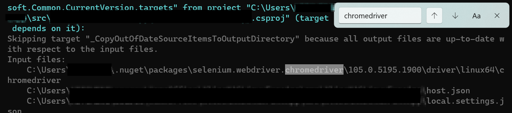

How to Conditionally Include a Nuget Package
September 21, 2022 - 4 mins read time - 648 words - garrardkitchen
The context
I have implemented a solution that as it’s primary objective iterates through a sequence of HTTP Requests and page interactions. With sequencing through these steps regularly it gives the support team the maximum amount of time to react to an outage. This outage can be isolated to this particular service, or can originate from any of it’s downstream dependencies.
To help with the automation of these steps, I’m using Selenium and in particular, it’s headless browser capability in conjunction with ChromeDriver. With this combination, I can navigate within a Chrome browser, provide alphanumerical inputs and execute mouse clicks, all by using imperative code.
I am using serverless technologies to orchestrate it’s delivery, and for this solution’s resiliency. The particulars include an Azure FucntionsApp (Linux Container) that hosts the C# .NET 6.0 FunctionsApp, and the ChromeDriver which happens to be an external program (ergo, not managed code). I use the DevOps approach to build the FunctionsApp and associated unit tests, run the unit tests, produce code coverage stats (with min threshold), push the Docker image to ACR, deploy to a slot, assess error rates by calling az monitor log-analytics query … then performing a swap with the production slot post a manual verification step. These steps are incorporated into separate pipelines within Azure DevOps. There are multiple pipelines, one for infrastructure and one for the application. For the IaC I use the bicep DSL. I’m using common pipeline patterns such as variable and jobs templates. I’m also interacting with the az pipelines (azure-devops cli extension) to create/update variable-groups and variables.
The issue
During the execution of this FunctionsApp, I have observed warnings reporting a ChromeDriver mismatch with the Chrome browser, in the logs. This needed to be addressed.
My Dockerfile installs the latest stable version of Chrome - which happens to be version (major - semantic versioning) 105. However, my local development environment is constrained to using Chrome 104. To avoid any potential incompatibility issues, as well as to quieten these annoying warnings, I somehow need to implement a solution that requires zero maintenance.
The solution
Thanks to Mrs Google, and DDoSing this search engine with of terms such as nuget, conditions, linux, I eventually cobbled together a way to conditionally include package references. IDK there is a choose element within a csproj xml schema. I do now!
I felt that the real challenge here was to include a package based on the intended operating system of the runtime. In dotnet vernacular, this is know as a Runtime Identifier. Examples of such are, linux-64, win-64, win-32. You provide this Runtime Identifier by using the -r (runtime) switch. A full example can be found later in this post.
Additionally, I felt it was important that the DX would not suffer consequently. So, I needed someway to set a default. This default will come into play when a developer runs this FunctionsApp via:
- the
dotnet runcli command or - from within an IDE (Rider, VS) or
- code editor such as VSCode.
In this example xml snippet, you can see how I’ve implemented a default and how I used the Condition attribute to include packages based on the Runtime Identifier:
<Choose>
<When Condition="$(RuntimeIdentifier) != ''">
<ItemGroup>
<PackageReference Condition="$(RuntimeIdentifier.StartsWith('win'))" Include="Selenium.WebDriver.ChromeDriver" Version="104.0.5112.7900" />
<PackageReference Condition="$(RuntimeIdentifier.StartsWith('linux'))" Include="Selenium.WebDriver.ChromeDriver" Version="105.0.5195.1900" />
</ItemGroup>
</When>
<Otherwise>
<ItemGroup>
<PackageReference Include="Selenium.WebDriver.ChromeDriver" Version="104.0.5112.7900" />
</ItemGroup>
</Otherwise>
</Choose>
I specify the runtime identifier of linux-64 in the Dockerfile when I publish the .NET Core FunctionsApp. This can be seen in the command snippet below. This will ensure that the version (major) 105 is included:
dotnet publish -p:PublishChromeDriver=true .\my-functionsapp.csproj -c release --self-contained -r linux-x64 --output ./publish
And if you set the verbosity of the output by adding this switch -v d (detailed) you will have visual confirmation that the appropriate version has been included:

And there you have it, an example of how to include a different version of a nuget package.